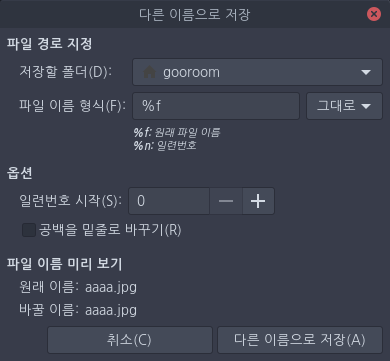

여러 사진에 일정한 번호가 지정되도록 이름을 한 번에 바꾸려면 다음을 수행합니다.
1. Ctrl + F9 바로 가기 키로 이미지 모음을 엽니다. 2. 이미지 모음에서 Ctrl 키를 누른 채로 이미지를 클릭하여 이름을 바꾸려는 사진을 하나씩 선택합니다. 또는 Ctrl + A 키를 눌러 모든 사진을 선택합니다. 3. 다른 이름으로 저장을 클릭합니다. 파일 이름 옵션이 있는 새 창이 나타납니다(아래 사진 참조).  4. 이름을 변경한 사진은 기본적으로 현재 폴더에 저장합니다. 다른 위치에 저장하려면 대상 폴더를 변경합니다. 5. [파일 이름 형식]에서 이름 형식을 지정합니다. [파일 이름 미리 보기]에 변경될 새 파일 이름이 표시됩니다. 파일 이름을 바꾸는 방법은 사진의 [파일 이름 형식] 선택 항목을 참조합니다. 6. 형식을 변환하려는 것이 아니라면 [파일 이름 형식] 드롭다운 메뉴를 [그대로]로 유지합니다. 7. [다른 이름으로 저장]을 클릭하면 사진 이름이 변경됩니다.
변경될 파일 이름은 [파일 이름 형식] 입력란에 입력한 내용에 따라 결정됩니다.
- [파일 이름 형식] 입력란에서 %f를 추가하면 원본 파일 이름을 새 파일 이름의 일부로 유지합니다.
예를 들어 [파일 이름 형식] 입력란에 판교_%f라고 입력하면, flower.jpg, house.jpg, cat.jpg 파일이 각각 판교_flower.jpg, 판교_house.jpg, and 판교_cat.jpg로 이름이 변경됩니다.
- %n을 추가하면 사진에 순서대로 번호를 지정합니다. 시작 번호는 옵션에서 지정합니다.
예를 들어 [파일 이름 형식] 입력란에 햇살_%n이라고 입력하면, flower.jpg, house.jpg, cat.jpg 파일이 각각 햇살_2.jpg, 햇살_3.jpg, 햇살_1.jpg로 이름이 변경됩니다(원본 파일 이름의 알파벳 순서로 번호 지정).